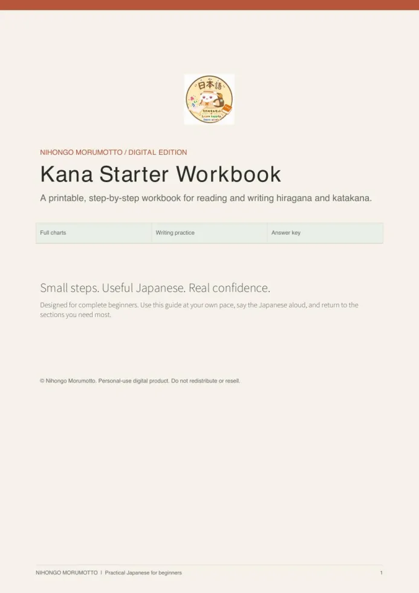
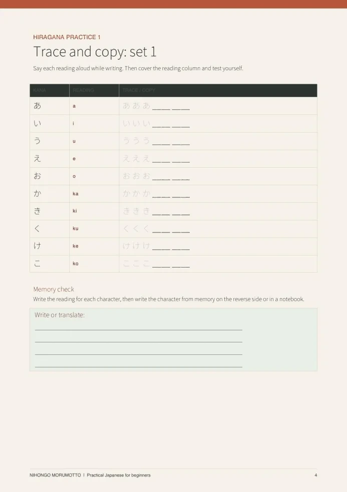
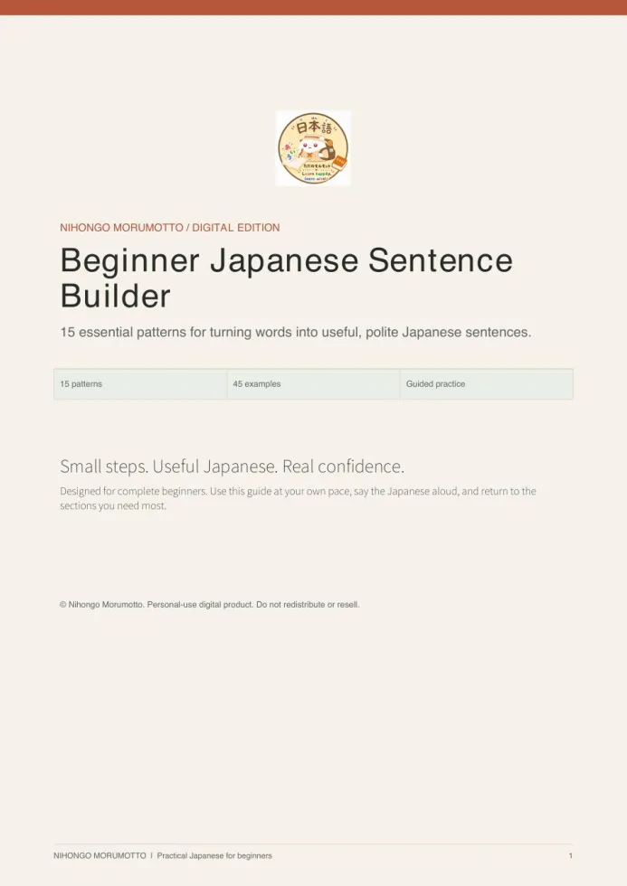
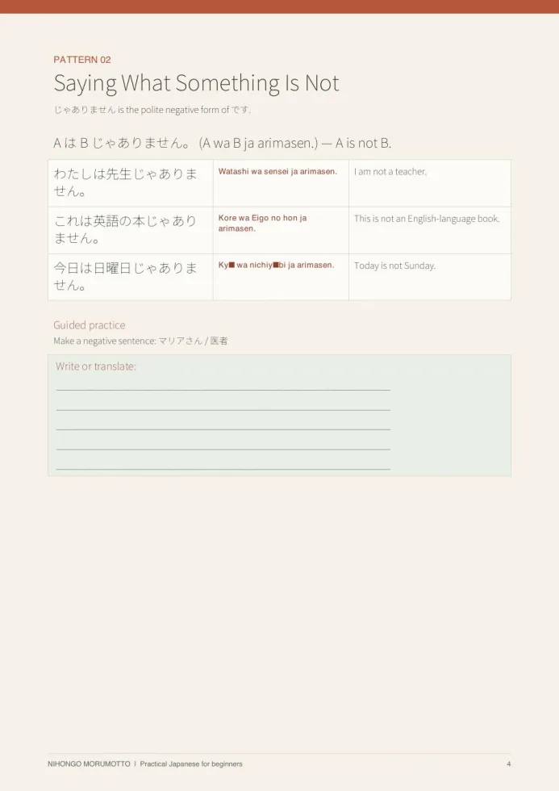
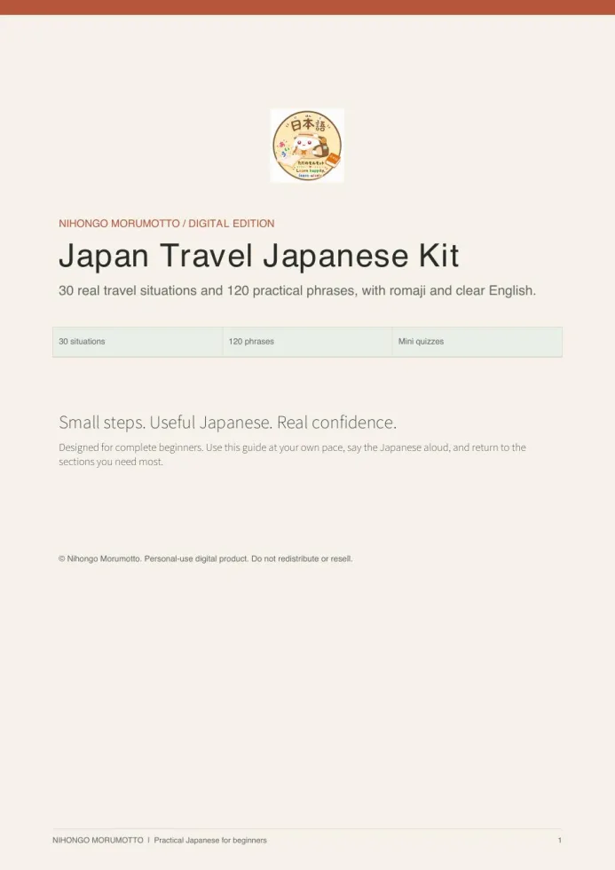
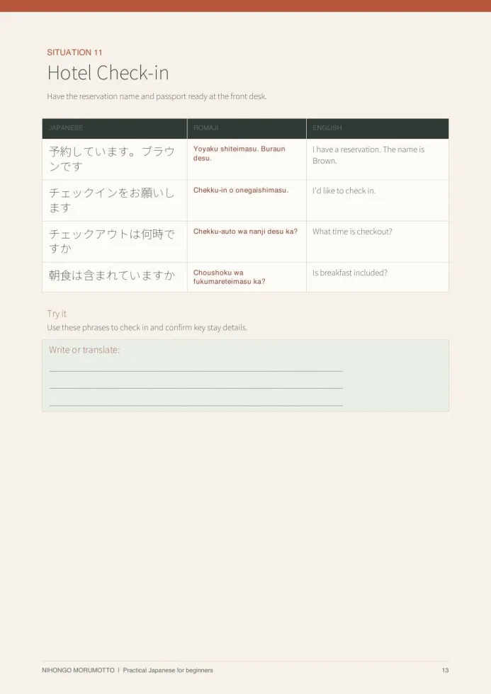

Build a strong foundation
Perfect if you want to understand how Japanese works and make steady progress.
- Read hiragana and katakana
- Build simple sentences with confidence
- Grow useful everyday vocabulary
- Have your first short conversations
Clear, focused resources that take complete beginners from “I don’t know where to start” to useful Japanese for daily life and travel.
Preview the actual products before you decide. Beginner resources start at US$7.
Both paths are made for complete beginners. Choose the goal that feels most exciting—you can always explore the other one later.
Perfect if you want to understand how Japanese works and make steady progress.
Perfect if you want useful phrases for the moments that matter most in Japan.
Read the romaji, say each phrase aloud three times, then imagine the moment you would use it.
Want more lessons like this?
Follow @learningjapanesetogether2026 for beginner Japanese, travel phrases, and short practice posts.
You don’t need to memorize a textbook before you speak. Each lesson follows a simple rhythm.
Focus on a phrase, pattern, or small group of words without information overload.
Use romaji for support while you build confidence with Japanese sounds and writing.
Connect what you learn to travel and daily-life situations so it sticks.
These are actual pages from the finished products—not mockups. Choose the resource that solves the problem you have now.


Start reading and writing hiragana and katakana with guided practice.
Best first purchase · US$7 →

Move from memorized words to useful, polite Japanese sentences.
Build speaking confidence · US$9 →

Keep practical phrases ready for 30 common situations in Japan.
Prepare for your trip · US$12 →All prices are in US dollars. Tap a DM button, send the shown product keyword, and we will reply with payment and delivery details.
Get the complete beginner collection for everyday foundations and confident travel.
Best for: learners who want everything together at the best price.
A practical digital companion for complete beginners preparing for a smoother trip to Japan.
Best for: first-time visitors who want useful words ready before departure.
Send “TRAVEL KIT” in the DM.
Open DM to buy ↗A guided digital workbook for learning to read and write hiragana and katakana.
Best for: complete beginners who want a clear first step.
Send “KANA WORKBOOK” in the DM.
Open DM to buy ↗A practical digital guide for turning essential words into useful Japanese sentences.
Best for: learners ready to move from vocabulary to conversation.
Send “SENTENCE BUILDER” in the DM.
Open DM to buy ↗Experience the Morumotto teaching style before choosing a paid product.
Best for: new learners exploring kana, grammar, vocabulary, and quizzes.
Not sure which one to choose? Start with the US$7 Kana Starter Workbook, or send “HELP ME CHOOSE” in a DM and tell us your Japanese goal.
Nihongo Morumotto is for learners who want Japanese to feel approachable, practical, and fun—not overwhelming.
Every resource is designed around real beginner needs: clear explanations, useful contexts, and enough support to help you say your first words with confidence.
Choose your product and send its name to us on Instagram. We will reply by DM with the available payment method and confirm your order.
Yes. Every paid product on this page is priced in US dollars.
These are digital learning products. Delivery details will be confirmed in your Instagram DM after payment.
Yes. The Japanese Study Room is free and includes kana, grammar, vocabulary, phrases, and interactive practice.
Send “HELP ME CHOOSE” and tell us whether your goal is beginner Japanese, conversation, or travel. We will recommend one product—not pressure you to buy everything.